기계정비산업기사 (2009-03-01 기출문제)
1과목: 공유압 및 자동화시스템
1. 윤활유의 목적으로 적합하지 않은 것은?
- 실(seal)을 고착시킬 것
- 내구성을 향상시킬 것
- 마찰력을 감소시킬 것
- 장치의 부식을 방지할 것
(정답률: 88%)

2. 공압 포핏식 밸브의 단점 중 옳은 것은?
- 다방향 밸브일 때는 구조가 복잡해진다.
- 이물질의 영향을 잘 받는다.
- 짧은 거리에서 개폐를 할 수 없다.
- 윤활이 필요하고 수명이 짧다.
(정답률: 75%)
3. 다음 중 공기압축기에서 공급되는 공기압을 보다 낮은 일정의적정한 압력으로 감압하여 안정된 공기압으로 하여 공압기기에 공급하는 기능을 하는 밸브는?
- 감압 밸브
- 릴리프 밸브
- 교축 밸브
- 시퀸스 밸브
(정답률: 83%)
4. 다음 중 유압 작동유의 점도가 너무 낮을 경우 발생되는 현상이 아닌 것은?
- 내부 누설 및 외부 누설
- 마찰부분 마모 증대
- 정밀한 조절과 제어 곤란
- 작동유의 응답성 저하
(정답률: 43%)
5. 공기압 조정 유닛에서 공급되는 공기압이 0.6MPa이고 실린더의 단면적이 10cm2라고 하면 작용할 수 있는 하중은 몇 N인가?
- 60N
- 600N
- 6000N
- 60000N
(정답률: 58%)
6. 2개의 입력 신호 A와 B에 대하여 미리 정한 복수의 조건을 동시에 만족하였을 때에만 출력되는 회로는?
- AND 회로
- OR 회로
- NOT 회로
- NOR 회로
(정답률: 90%)
7. 압축공기의 출입구가 있는 본체에 끝 부분이 원추 형상을 한 조절나사가 설치되어 밸브 본체 통로와 원추체 간의 틈새를 변화시켜 양 방향으로 공기량을 조절 가능하게 한 밸브는?
- 스톱 밸브
- 스로틀 밸브
- 체크 밸브
- 파일럿 작동 체크 밸브
(정답률: 65%)
8. 다음 기호의 설명으로 적합한 것은?
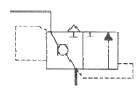
- 공압 장치의 배기시 저항을 줄여 액추에이터의 속도를 증가시키게 한다.
- 공압 장치의 벤트 포트를 열어 무부하 운전이 용이하도록한다.
- 공압 장치의 맥동현상을 방지하는 특수밸브이다.
- 공압 장치의 파일럿작동에 의한 작은 힘으로 작동하여 작동압력을 줄일 수 있다.
(정답률: 51%)
9. 공유압 변환기 사용시 주의점으로 옳은 것은?
- 수평방향으로 설치한다.
- 실린더나 배관 내의 공기를 충분히 뺀다.
- 반드시 액추에이터보다 낮게 설치한다.
- 열원에 가까이 설치한다.
(정답률: 77%)
10. 고압 소용량 펌프 및 저압 대용량 펌프와 릴리프 밸브, 무부하 밸브, 체크 밸브를 1개의 본체에 조합시킨 펌프로 오일의 온도상승을 방지하는 효율적인 펌프이나 가격이 고가이고, 체적이 큰 단점이 있는 펌프는?
- 다단 펌프
- 다련 펌프
- 기어 펌프
- 복합 펌프
(정답률: 74%)
11. 먼지, 저러움, 흔들림 등과 같이 평소에는 아무것도 아닌 것으로 간주되어 주의를 하지 않으며, 고장이나 불량에 주는 영향이 적다고 보는 것은?
- 복원
- 미결함
- 자연열화
- 강제열화
(정답률: 72%)
12. PLC 프로그램에서 카운터의 출력은 어떻게 OFF시키는 가?
- 카운터의 계수치가 설정치와 같아지면 OFF된다.
- 카운터의 리셋 입력을 ON으로 한다.
- 카운터의 계수 입력을 설정시간 동안 ON으로 한다.
- 카운터의 계수 입력을 설정시간 동안 OFF로 한다.
(정답률: 68%)
13. 유압 베인 모터의 1회전당 유량이 50cc 일 때, 공급 압력 8 MPa, 유량 30ℓ/min으로 할 경우 회전수(rpm)은?
- 700
- 650
- 625
- 600
(정답률: 43%)
14. 다음 중 서미스터의 분류에 해당되지 않는 것은?
- NTC
- PNP
- CTR
- PTC
(정답률: 77%)
15. PLC를 이용하여 시스템을 제어하는 과정에서 프로그램 에러를 찾아내어 수정하는 작업은?
- 코딩
- 디버깅
- 모니터링
- 프로그래밍
(정답률: 89%)
16. 자동제어를 설명한 것과 거리가 먼 것은?
- 귀환신호(피드백 신호)가 필요하다.
- 개 회로 (오픈 루프)시스템이다.
- 서보 시스템이 여기에 속한다.
- 목표치에 맞추어 오차를 수정한다.
(정답률: 74%)
17. 유압기기를 보수 관리할 때 일상 점검 요소가 아닌 것은?
- 작동유의 온도 점검
- 기름 탱크 유면 높이
- 기기, 배관 등의 누유
- 작동유의 샘플일 검사
(정답률: 78%)
18. 짧은 실린더 본체로 긴 행정거리를 필요로 하는 경우에 시용할 수 있는 다단 튜브형 로드를 가진 실린더는?
- 탠덤 실린더
- 충격 실린더
- 로드리스 실린더
- 텔레스코프 실린더
(정답률: 78%)
19. 자동화를 위한 센서의 선정 기준이 아닌 것은?
- 생산 원가의 절감
- 생산 공정의 합리화
- 생산 설비의 자동화
- 생산 체제의 전형화
(정답률: 55%)
20. 자동화를 하는 중요한 이유가 아닌 것은?
- 생산성 향상
- 인건비 절감
- 제품품질의 안정
- 생산리드 타임의 증가
(정답률: 84%)
2과목: 설비진단관리 및 기계정비
21. 설비의 전형적인 고장을 곡선과 유사한 곡선은?
- 로그(log)곡선
- 정현 (sine)곡선
- 배스터브(bathtub)곡선
- 하이포이드(hypoid)곡선
(정답률: 59%)
22. 다음 중 회전기계에서 발생하는 진동을 측정하는 경우 측정변수를 선정하는 내용에 대한 설명으로 맞는 것은?
- 낮은 주파수에서는 가속도,중간 주파수에서는 속도,높은 주파수에서는 변위를 측정변수로 한다.
- 진동에너지나 피로도가 문제가 되는 경우 측정변수는 속도로 한다.
- 주파수가 낮을수록 가속도의 검출감도가 높아진다.
- 주파수가 높을수록 변위의 검출감도가 높아진다.
(정답률: 39%)
23. 직접 오는 소음은 소음원으로 부터 거리가 2배 증가함에 따라 얼마나 감소하는가?
- 2dB
- 4dB
- 6dB
- 8dB
(정답률: 81%)
24. 설비배치 계획자가 설비배치의 기초자료 수집 및 유형을 선택하는 것을 돕기 위해서 쓰이는 방법은?
- ABC분석
- P-Q분석
- 일정계획법
- 활동관련 분석
(정답률: 79%)
25. 오버홀(Overhaul)은 설비의 효율을 높이기 위하여 관리하는데 매우 중요한 활동이다.다음 중 오버홀(Overhaul)은 어떤 보전 활동에 포함되는가?
- 일상보전활동
- 사후보전활동
- 예방보전활동
- 개량보전활동
(정답률: 65%)
26. 진동 측정용 센서 중 접촉형은?
- 압전형
- 용량형
- 와전류형
- 홀소자형
(정답률: 77%)
27. A=1회에 소요되는 검사 비용, B=고장으로 인한 단위기간 당 손실, C=손실계수(=B/A), r=단위 기간당 장해발생 빈도수 일 때 설비의 최적 검사주기를 구하는 식(T)은?
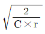
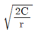
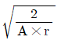
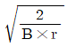
(정답률: 62%)
28. 고주파 진동에 효과적이지만 저주파 진동에는 역효과가 발생되는 진동 방지 방법은?
- 진동차단기 사용
- 2단계 차단기 사용
- 기초의 진동을 제어
- 질량이 큰 경우 거더(girder)이용
(정답률: 69%)
29. 설비관리 기능을 일반 관리기능,기술기능,실시기능 및 지원 기능으로 분류할 때 일반 관리기능이라고 볼 수 없는 것은?
- 보전정책 결정 및 보전시스템 수립
- 자산관리와 연동된 설비관리 시스템 수립
- 보전업무의 경제성 및 효율성 분석ㆍ측정
- 보전업무 분석 및 보전기술 개발
(정답률: 73%)
30. 윤활유의 작용이 아닌 것은?
- 감마작용
- 냉각작용
- 방독작용
- 응력 분산작용
(정답률: 73%)
31. 집중보전의 장점을 설명한 것 중 틀린 것은?
- 작업의 신속성
- 인원배치의 유연성
- 보전책임의 명확성
- 작업일정 조정 용이성
(정답률: 62%)
32. 음원으로부터 단위시간당 방출되는 총 음에너지를 무엇이라 하는가?
- 음향 세기
- 음향 출력
- 음향 압력
- 음장
(정답률: 74%)
33. 진단(Diagnosis)방법,항목,부위,주기 등에 대한 표준화 대상으로 맞는 것은?
- 수리 표준
- 일상점검표준
- 작업 표준
- 설비점검표준
(정답률: 69%)
34. 보전자재관리상의 특징을 열거한 것 중 틀린 것은?
- 보전자재는 년 간 사용빈도가 낮으며,소비속도가 늦은 것이 많다.
- 자재구입품목,수량,시기계획을 수립하기 곤란하다.
- 불용자재의 발생가능성이 적다.
- 보전 기술수준 및 관리수준이 보전자재의 재고량을 좌우하게 된다.
(정답률: 68%)
35. 다음 중 진동 주파수에 대한 설명으로 틀린 것은?
- 회전체가 불평형 시 그 물체의 회전 주파수의 정수배와 동일한 진동수를 유발시킨다.
- 기계부품 이완 시 축 회전 주파수의 정수배와 동일한 진동수를 형성한다.
- 베어링에 손상이 있는 경우 베어링 회전에 해당하는 고주파의 진동을 일으킨다.
- 진동 주파수 는 단위 시간당 사이클의 횟수이다.
(정답률: 34%)
36. 회전기계에서 발생하는 진동신호의 주파수 분석에 대한 설명이 잘못된 것은?
- 시간신호를 푸리에 변환하여 주파수를 분석한다.
- 회전기계에서 발생하는 여러 가지의 진동신호의 분석이 가능하다.
- 언밸런스의 이상 현상은 회전주파수의 1f의 특성으로 나타난다.
- 진동주파수는 회전축의 회전수와 반비례한다.
(정답률: 65%)
37. 그리스 윤활이 유(oil)윤활과 비교하여 장점에 해당되는 것은?
- 냉각 작용이 크다.
- 누설이 적다.
- 급유가 용이하다.
- 순환급유가 용이하다.
(정답률: 71%)
38. 종합적 생산보전(TPM)에 대한 설명 중 옳지 않은 것은?
- 설비효율을 최고로 높이기 위한 보전 활동
- 전원이 참가하여 동기부여 관리
- 생산설비의 라이프 사이클만 관리하는 활동
- 작업자의 자주보전 체제의 확립
(정답률: 80%)
39. 열화상(Thermography)측정 장비를 이용하여 발견하기에 가장 적절한 결함은?
- 구조적 헐거움(Looseness)
- 공진
- 회전체의 질량 불균형
- 과전압 차단기의 상태 불량
(정답률: 66%)
40. 다음 중 설비의 체질을 개선하여 설비의 수명연장을 위하여 실시하는 보전활동은?
- 예방보전
- 개량보전
- 생산보전
- 사후보전
(정답률: 60%)
3과목: 공업계측 및 전기전자제어
41. 제어량을 목표값으로 유지하기 위해 조작량이 너무 크거나 작아 진동이 생길 수 있어 실제로는 동작간격(히스테리시스:Hysteresis)을 가지며 정밀도가 높은 공정제어에는 사용이 곤란한 제어는?
- 비례제어
- 온/오프제어
- 비례적분제어
- 비례미분제어
(정답률: 53%)
42. 다음 중 FET(fieldeffecttransistor)기호를 나타내는 것은?
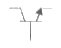
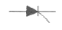
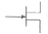
(정답률: 51%)
43. 신호전송의 노이즈 대책의 방법 중 정전유도의 제거에 효과가 있는 것은?
- 필터 사용
- 연선 사용
- 관료 사용
- 실드선 사용
(정답률: 68%)
44. 다음 중 공기식 조작기는?
- 다이어프램 밸브
- 전자밸브
- 전동밸브
- 서보전동기
(정답률: 84%)
45. 200V를 사용하는 가정집 전압의 최대값은 약 몇 [V]인가?
- 220V
- 283V
- 346V
- 440V
(정답률: 57%)
46. 논리식 Aㆍ(A+B)를 간단히 하면?
- A
- B
- AㆍB
- A+B
(정답률: 73%)
47. 금속표면으로부터 자유전자를 방출시키는 방법이 아닌 것은?
- 광전자방출
- 열전자방출
- 2차전자장출
- 3차전자방출
(정답률: 65%)
48. 조절계로부터의 신호와 구동축 위치 관계를 외부의힘에 대하여 항상 정확하게 유지시키고 조작부가 제어 루프 속에서 충분한 기능을 발휘할 수 있도록 하기 위해 사용하는 것은?
- 구동부
- 제어밸브
- 포지셔너
- 변환기
(정답률: 63%)
49. 연산증폭기에 계단파 입력(StepFunction)을 인가하였을때 시간에 따른 출력 전압의 최대 변화율을 무엇이라 하는가?
- 드리프트(drift)
- 옵셋(offset)
- 대역폭(bandwidth)
- 슬루율(slewrate)
(정답률: 71%)
50. 오리프스 유량계는 어떤 정리를 이용한 것인가?
- 토리첼리의 정리
- 프랭크의 정리
- 보일-샤를의 정리
- 베르누이의 정리
(정답률: 79%)
51. 다음 ( )안에 알맞은 내용은?
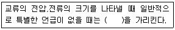
- 평균값
- 최대값
- 순시값
- 실효값
(정답률: 72%)
52. 어떤 도체에 10초간 5A의 전류가 흐를 때 이동한 전기량은 몇 [C]인가?
- 0.5C
- 2.0C
- 15C
- 50C
(정답률: 63%)
53. 다음과 같은 블로선도에서 전달함수로 알맞은 것은?
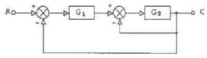
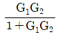
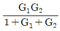
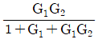
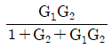
(정답률: 63%)
54. 직류 발전기에서 전기자 반작용을 방지하는 대책으로 볼수 없는 것은?
- 브러시의 위치를 전기적 중성축까지 이동시킨다.
- 정류자를 설치한다.
- 보상 권선을 설치한다.
- 보극을 설치한다.
(정답률: 45%)
55. 다음 중 읽기와 쓰기의 양쪽이 가능한 기억 소자는?
- RAM
- ROM
- PROM
- TTL
(정답률: 78%)
56. 다음 중 오실로스크프로 측정할 수 없는 것은?
- 위상
- 임피던스
- 전압
- 주파수
(정답률: 59%)
57. 0~150V전압계가 최대눈금의 1%확도를 갖는다. 이 계기를 상요해서 측정한 전압이 60V일 때 제한 오차를 백분율로 계산하면 얼마일까?
- 1.0%
- 1.5%
- 2.0%
- 2.5%
(정답률: 56%)
58. 다음 중에서 점도의 단위는?
- A/V
- N/m2
- P(poise)
- V/m
(정답률: 75%)
59. 직류발전기의 전기자 철심을 성층 철심으로 하는 이유는?
- 동손의 감소
- 기계손의 감소
- 철손의 감소
- 풍손의 감소
(정답률: 67%)
60. 직류 전동기에서 자속을 감소시키면 회전수는?
- 증가
- 감소
- 정지
- 불변
(정답률: 68%)
4과목: 기계정비 일반
61. 다음 중 기어 이 면의 열화에 의한 기어의 손상은 어느 것 인가?
- 고부하 절손
- 피로 파손
- 균열
- 습동 마모
(정답률: 47%)
62. 교류 3상 유도 전동기의 회전방향을 바꾸려면 어떻게 하는가?
- 전원 3선 중 1선을 교체하여 결선한다.
- 전원 3선 중 2선을 교체하여 결선한다.
- 전원 3선 중 1선을 단락 시킨다.
- 접지선을 단락 시킨다.
(정답률: 77%)
63. 베어링 열박음 시 몇도 이상 가열하면 경도 저하가 일어나는가?
- 100℃
- 130℃
- 160℃
- 200℃
(정답률: 77%)
64. 배관용 파이프에 나사를 절삭하는 공구로 옳은 것은?
- 파이프 커터
- 파이프 바이스
- 오스터
- 컴비네이션 플라이어
(정답률: 67%)
65. 관 이음쇠의 기능이 아닌 것은?
- 관로의 연장
- 관로의 곡절
- 관의 피스톤 운동
- 관로의 분기
(정답률: 79%)
66. 피치가 2mm인 세줄나사 스크류잭을 2회전 시켰을 때 이동거리는 얼마인가?
- 2mm
- 4mm
- 6mm
- 12mm
(정답률: 73%)
67. 10m이하의 저양정 펌프에서 토출량을 조절할 수 있는 밸브는?
- 푸트밸브
- 감압밸브
- 체크밸브
- 나비형 밸브
(정답률: 63%)
68. 원심형 통풍기 중 고속도로 터널 환풍기에 사용되며 효율이 가장 좋은 통풍기는 어느 것인가?
- 실로코 통풍기
- 플레이트 통풍기
- 용적식 통풍기
- 터보 통풍기
(정답률: 75%)
69. 다음 원심식 압축기에 대한 설명 중 관계 없는 것은?
- 설치면적이 비교적 작다.
- 윤활이 쉽다.
- 압력 맥동이 없다.
- 고압 발생이 쉽다.
(정답률: 66%)
70. 측정기를 측정방법에 따라 분류할 때 미니미터,옵티미터,공기 마이크로미터는 어디에 포함되는가?
- 직접측정
- 비교측정
- 한계게이지 측정
- 계량측정
(정답률: 62%)
71. 송풍기를 설치한 곳의 기초 지반이 연약할 때 가장 큰 영향을 미치는 고장 발생의 현상은?
- 베어링의 과열
- 시동 시 과부하 발생
- 진동 발생
- 풍량ㆍ풍압 과소
(정답률: 76%)
72. 벨트식 무단변속기의 정비 관련 사항 중 틀린 것은?
- 밸트를 이동시킴에 있어서 무리가 발생될 수 있다.
- 벨트의 수명은 표준 사용방법으로 운전 할 때의 1/3~2배 정도이다.
- 가변피치 풀리의 습동부는 윤활 불량이 되기 쉽다.
- 광폭 벨트는 특수하므로 예비품 관리를 잘 해두어야 한다.
(정답률: 69%)
73. 압력이 포화 수증기압 이하로 낮아지면서 기포가 발생하는 현상을 무엇이라 하는가?
- 캐비테이션
- 수격현상
- 채터링현상
- 교축현상
(정답률: 73%)
74. 축 끼워맞춤부 보스의 내경을 상당량 깎아내고 부시를 끼울 때 보스와 부시의 끼워맞춤은?
- 헐거움 끼워맞춤
- 중간 끼워맞춤
- 억지 끼워맞춤
- 틈새 끼워맞춤
(정답률: 60%)
75. 게이트 밸브(일명:슬루스 밸브)를 설명한 사항 중 틀린 것은?
- 압력손실이 글로브 밸브보다 적다.
- 유체의 흐름에 대해 수직으로 개폐한다.
- 전개ㆍ전폐용으로 주로 쓰인다.
- 밸브의 개폐 시 다른 밸브보다 소요시간이 짧다.
(정답률: 44%)
76. 원형의 긴 끈으로 된 밸트로서 전달력이 작은 소형 공작기계의 전동벨트로 사용되는 것은?
- 보통 벨트
- 링크 벨트
- 레이스 벨트
- 타이밍 벨트
(정답률: 56%)
77. 다음 축 이음 중 플렉시블 커플링이 아닌 것은?
- 기어 커플링
- 고무 커플링
- 체인 커플링
- 머프 커플링
(정답률: 70%)
78. 원심 펌프가 기동은 하지만 진동하는 원인으로 옳지 않은 것은?
- 축의 굽음
- 볼 베어링의 손상
- 캐비테이션 발생
- 빈번한 기동
(정답률: 62%)
79. 가열 끼워맞춤 작업의 설명으로 잘못된 것은?
- 가열 시에는 골고루 서서히 가열한다.
- 가열할 때는 200~250℃ 이하로 가열한다.
- 베어링 120℃ 이상 가열해서는 안된다.
- 조립 후 죔새를 유지하기 위해 급냉한다.
(정답률: 65%)
80. 액상 개스킷(gasket)의 사용방법으로 틀린 것은?
- 접합면의 수분,기름 등 오물을 제거한다.
- 얇고 균일하게 칠한다.
- 바른 직후 접합해도 관계없다.
- 사용온도는 40℃ 이하의 저온에서만 가능하다.
(정답률: 73%)